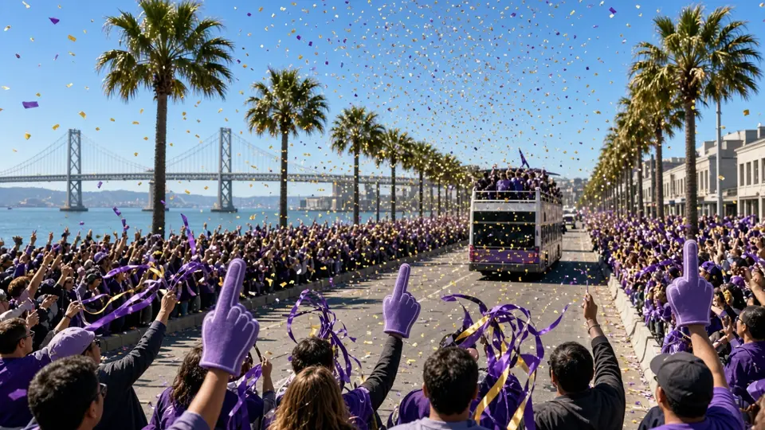
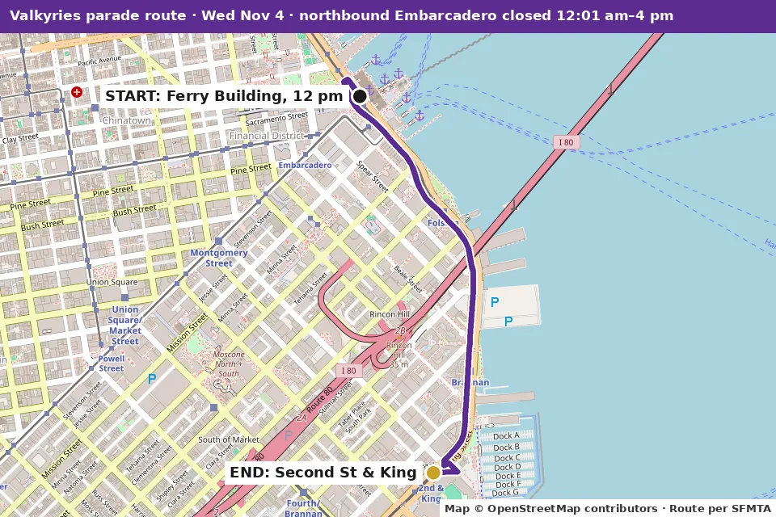

Urban Concierge Brief: SF Bay Area
Wednesday Nov 4 – Friday Nov 6, 2026 · Snapshot compiled Wed Nov 4, 2026, 6:15 am PT (BayAreaDailySync)
- Coastal Flood Advisory, SF: 6 am Wed to 1 pm Mon Nov 9. Morning high tides up to 1.6 ft above normal.
- Beach Hazards Statement, SF: 5 am Thu to 7 pm Sat. Sneaker waves, rip currents, 12–16 ft breakers.
- Valkyries parade Wed 12–2 pm: Embarcadero closed, 9 Muni routes rerouted 5 am–3 pm.
What's on

Wed Nov 4, 12–2 pm
Golden State Valkyries Championship Parade
Ferry Building (near Mission St) along the bay side of The Embarcadero to King and 2nd.

Route map · © OpenStreetMap contributorsDetails →
Thu Nov 5, 10 am–2 pm
Ferry Plaza Farmers Market (Thursday edition)
Outside the Ferry Building; 10 to 15 vendors with street-food lunch and fresh produce.
Details →

closing week, through Sat Nov 7
Every Saturday Night (A.C.T. / SFBATCO)
Strand Theater, 1127 Market St.
Details →Isabel Leonard Sings Ravel: Fri Nov 6, 7:30 pm
SF Symphony
Davies Symphony Hall, 201 Van Ness Ave.
Details →
More in this brief
Where to eat
No Yelp ratings (Yelp blocks automated loads). New picks this run, each from its Michelin page opened today.
The Progress, Fillmore, SF (1525 Fillmore St) · Californian · Michelin One Star. Around the corner from the Fillmore; Michelin calls it a "sunny NorCal-meets-Nordic destination," two stories of wood, stone and tile. +1 415-673-1294. https://guide.michelin.com/us/en/california/san-francisco/restaurant/the-progress
San Ho Won, Mission, SF (2170 Bryant St) · Korean · Michelin One Star. From chefs Corey Lee and Jeong-In Hwang; Michelin notes reservations are "difficult to come by." +1 415-868-4479. https://guide.michelin.com/us/en/california/san-francisco/restaurant/san-ho-won
Commis, Oakland (3859 Piedmont Ave) · Contemporary · Michelin Two Stars. Chef/owner James Syhabout's "serene" Piedmont Avenue dining room, "packed every night." +1 510-653-3902. https://guide.michelin.com/us/en/california/oakland/restaurant/commis
Chez Panisse, Berkeley (1517 Shattuck Ave) · Californian · in the Michelin Guide. Alice Waters' "high temple to locavorism," with an open kitchen. +1 510-548-5525. https://guide.michelin.com/us/en/california/berkeley/restaurant/chez-panisse
Getting around
Muni and cable cars (re-checked): $2.85 single ride with Clipper or tap-to-pay ($3.00 cash), good 120 min; MuniMobile no longer sells single rides (since Sep 1). Day pass $5.70. Cable car $9.00. Visitor Passports $15 / $35 / $47 (1/3/7-day). Youth 18 and under ride free (not cable cars). https://www.sfmta.com/getting-around/muni/fares
Muni reroutes Wed 5 am–3 pm (parade): F, N, 2, 9, 9R, 12, 14, 14R, 15; buses run F line service all day.
BART:
- Live feed (6:12 am Wed): only the planned 30-min delays Millbrae–SFO–Daly City from 9 pm Sun–Thu. All elevators in service.
- Yellow Line late-night single tracking in Contra Costa through Nov 6.
- Reduced BART-to-OAK service Wed night Nov 4 (about 9-min average waits).
- Powell St. entrance at 4th and Market closed through Nov 10.
- Coming up: Yellow Line single tracking Nov 12–13 · 24th St–Daly City bus bridge, no Green Line, Nov 14–15 · Transbay Tube single tracking Nov 21.
https://www.bart.gov/schedules/advisories
Bikes and scooters: Lyft Bike $1 to unlock + $0.19/min classic or $0.49/min ebike; day pass $15 (unlimited 30-min classic rides) (re-checked). https://www.lyft.com/bikes/bay-wheels/pricing · Lime and Spin scooter notes carried, not re-checked.
SFO (re-checked): Rental Car Center via AirTrain Blue Line. Lyft/Uber pick up on Level 5 of the Domestic Garage; taxis at the Arrivals center islands; Waymo available for select riders. International Terminal airporters now at Departures Level, Doors 5–6. https://www.flysfo.com/passengers/ground-transportation
Where to stay
Union Square has most major hotels and the best transit links (Powell BART's 4th & Market entrance is closed through Nov 10). Embarcadero and SoMa waterfront hotels sit inside Wednesday's parade closures until 4 pm. For Friday's symphony, Civic Center/Hayes Valley puts you walking distance from Davies. https://www.sftravel.com/neighborhoods
Assumptions and refresh
- Public data only, re-checked Wed Nov 4, 2026, about 6:12–6:15 am PT: NWS forecast and alerts, the Caltrans District 4 news index (no new posts since Tue), the BART advisory feed, the SFMTA parade page and valkyries.com. Event, restaurant, fare and SFO details carried from the Tue 10:10 pm brief, where they were read from official pages. Nobody was contacted and nothing was signed up for.
- The window is Wed–Fri.
- This is a snapshot. BayAreaDailySync refreshes it every 8 hours (6 am, 2 pm, 10 pm PT). Times are Pacific standard time. Prices appear only where a cited page lists them.
Not verified
- This run re-read only weather, alerts, Caltrans news, BART and the parade pages; everything else is carried from the 10:10 pm Tue brief.
- Yelp ratings (blocked); restaurant hours and reservation availability not checked.
- After Dark ticket price and Every Saturday Night showtimes and prices aren't on the pages read; Warriors ticket prices not checked.
- SFJAZZ blocked the load (403); Chase Center and SF Opera calendars didn't render readable dates; the Sharks schedule feed timed out. No events added from those.
- Carried Caltrans items (Marin US-101, SR-12 Denverton, San Mateo SR-92/US-101, SR-37, Hospital Curve) were not re-read this run.
- Lime and Spin pricing and SF Travel neighborhood notes carried, not re-checked.
- Exact timing of Mill Valley ramp closures depends on tides; Caltrans gives no schedule.
What changed since the last brief
What changed since the last brief (Tue 10:10 pm): Little. NWS issued a new Beach Hazards Statement for SF, 5 am Thu to 7 pm Sat (sneaker waves, rip currents, 12–16 ft breakers); the Coastal Flood Advisory starts this morning as planned. Forecast, Caltrans closures, BART alerts and events are unchanged; the parade is still on today 12–2 pm.